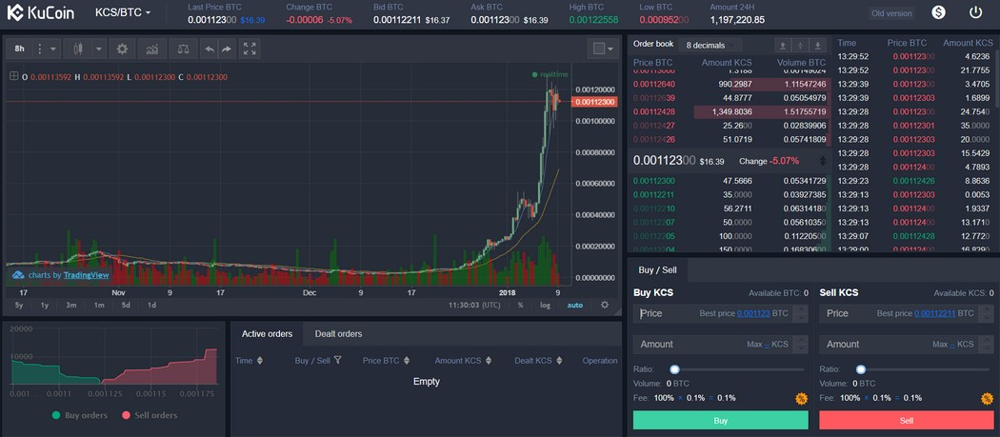

¿Qué es un exchange?
Un exchange es un sitio que te permite operar entre distintas divisas, digitales y fiat.
Los exchanges son mercados financieros que permiten bajo el libre juego de oferta y
demanda darle un valor económico a Bitcoin.
Estos exchanges pueden ser simple intermediarios entre usuarios, o proveer además funcionalidades
más complejas de trading.
Algunos exchanges conocidos son:
Coinbase
Coinbase es un intercambio de divisas digital con sede en San Francisco, California.
Intercambian intercambios de Bitcoin (₿), Bitcoin Cash , Ethereum (Ξ), Litecoin (Ł) y otros activos
digitales con monedas fiduciarias en 32 países, y transacciones y almacenamiento de bitcoin en
190 países en todo el mundo.
Tiene tanto web como aplicación móvil.
Binance
Binance proviene de las palabras binary y finance, es el exchange asiático más
popular de los últimos meses, creado por Changpeng Zhao (CEO de Binance, fundador de BijieTech y cofundador
de OKCoin), cuya visión es construir una plataforma de intercambio segura, con alcance global
y descentralizado, dicho sistema de intercambio estaría orientado solamente a las criptomonedas.
Tiene tanto web como aplicación móvil.

Kucoin
Kucoin es una plataforma internacional de negociación de criptomonedas e intercambio de activos
de blockchain.
Fundado por un grupo de entusiastas de blockchain que se habían probado en gigantes de la
industria como Ant Financial y GF Securities, Kucoin tiene como objetivo proporcionar a los
usuarios servicios de transacción e intercambio de activos digitales aún más seguros y convenientes,
integrando activos premium en todo el mundo y construyendo el estado del plataforma de transacciones
artísticas.
No tiene aplicación móvil.

Kraken
Fundado en 2011, Kraken sede en San Francisco es una de las mayores bolsas de Bitcoin en volumen y
liquidez en euros y también el tráfico de dólares canadienses,
dólares estadounidenses, libras esterlinas y yenes japoneses.
fue el primer intercambio de Bitcoin tener precio de cotización y el volumen que
aparece en la terminal Bloomberg, el primero en pasar una auditoría criptográficamente
verificables prueba de reservas, y es un socio en el primer banco criptomoneda.